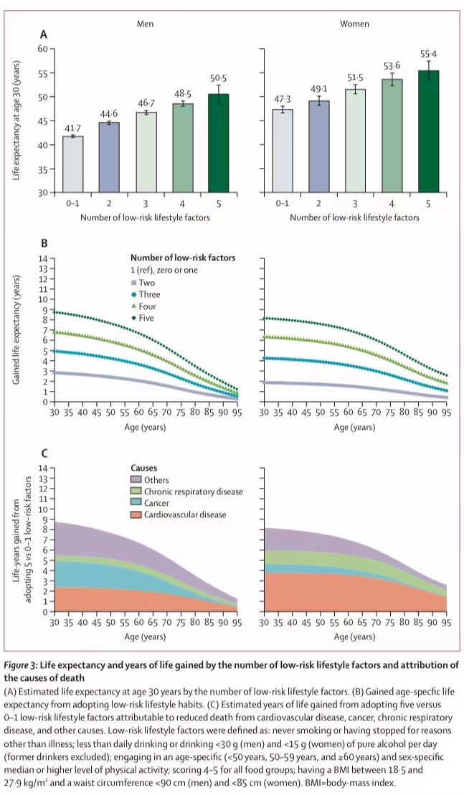

8月2日，《《柳叶刀公共卫生》》在线发表了北京大学公共卫生学院李立明教授和吕筠教授团队与中国疾病预防控制中心营养与 健康所赵丽云研究员团队合作开展的一项研究：“健康生活方式与中国人群30岁时的期望寿命——一项观察性研究”。揭示了推广 健康生活方式可以通过降低心血管疾病、恶性肿瘤及慢性呼吸系统疾病等重大疾病的死亡率，从而提高中国成年人的期望寿命。
吕筠介绍，提高我国居民平均期望寿命是《“健康中国2030”规划纲要》中提出的明确目标之一。平均期望寿命又称"生命期望值" 或"平均余命"，是对人的生命一种有根据的预测，即预测年龄某岁的人今后尚能生存的平均寿命。平均余命是根据各个年龄死亡 率计算出来的一项重要指标，可以综合表达各个年龄的死亡率水平，反映某一地区每一成员未来存活年龄的平均值。通过平均寿 命的比较分析，可以衡量出该国家(或地区)人们的健康水平。
该研究整合了中国慢性病前瞻性研究（CKB）约50万人数据、中国营养与健康监测调查（CNHS）17万余人数据以及全球疾病负担研 究（GBD）公开数据库，评价了普及健康生活方式在达成这一目标过程中可能发挥的作用。研究关注的健康生活方式包括五组：不 吸烟或非因病戒烟、不过量饮酒（每日饮酒量：男性<30g纯酒精，女性<15g纯酒精）、健康的饮食习惯（每日摄入新鲜蔬菜和水果 、每周1-6天摄入红肉及制品、每周≥4天摄入豆制品以及每周至少一天摄入水产品；具备4-5种视为具有健康的饮食习惯）、 积极的体力活动（总体力活动水平排位在同年龄组、同性别人群的前50%）、以及健康的体重和体型（BMI介于18.5-27.9kg/m2 之间，且男性腰围<2250px、女性腰围<2125px）。
研究利用传统寿命表法分析单一生活方式及综合生活方式得分对中国人群30岁时期望寿命的影响，并进一步采用Arriaga（人名）死因 分解法分析不同疾病死亡率降低对期望寿命延长的归因大小。
（A）具有不同数量健康生活方式因素者的30岁时期望寿命；（B）相对只具备0-1项健康生活方式因素者，具有多个健康生活方式因素者 期望寿命延长的幅度；（C）具有0-1项和5项健康生活方式因素者期望寿命差异的疾病别死亡率归因大小
结果发现，在中国人群中，相比没有或只有一种健康生活方式者，同时具备上述五种健康生活方式的男、女性人群30岁时的期望寿命分别 长8.8和8.1岁。女性中延长的期望寿命有72%可归因于心血管疾病、癌症和慢性呼吸系统疾病死亡率的降低，而男性中的归因比例则为64% 。多项亚组分析也表明，不同特征人群的期望寿命虽有差异，但随着健康生活方式的增多，期望寿命均逐渐延长。以城乡分析为例，具备上 述五种健康生活方式的城市人群30岁时的期望寿命较没有或只有一种健康生活方式者分别长9.2岁（男性）和10.5岁（女性），农村人群的 期望寿命相应长9.7岁（男性）和11.2岁（女性）。
吕筠表示，该研究证实，普及健康的生活方式将对提高我国居民期望寿命发挥重要作用。因此，采取综合措施落实全民健康生活方式行动应成 为健康中国行动的重要工作内容之一。